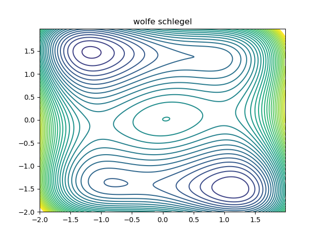
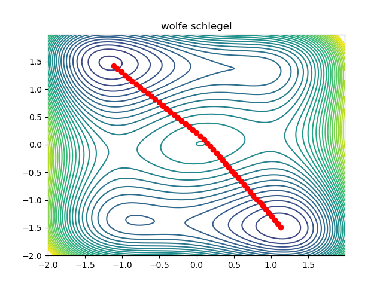
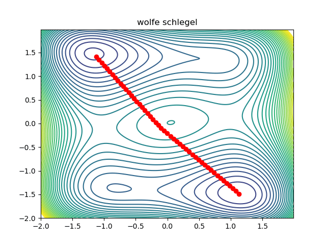

Given a smooth function \(f : \mathbb{R}^d \to \mathbb{R}\), it is natural to try and compute its critical points. Minima can be computed numerically using gradient descent. In this note, we are going to explain how to compute a saddle point between two minima of \(f\) numerically, using the automatic differentiation primitives provided by jax. As an example, we shall use the Wolfe Schlegel surface:
@jax.jit
def wolfe_schlegel(point):
x = point[0]
y = point[1]
return 10 * ( x**4 + y**4 - 2 * x*x - 4 * y*y +
x * y + 0.2 * x + 0.1 * y )Here is a contour plot of the Wolfe Schlegel surface:

As you can see, there are three minima. If we take a smooth path between two minima which goes least high on the surface, then the maximum point on the path must be a critical point. If it were not, we would be able to locally slide the path downhill at its maxima, contradicting our least high assumption. Therefore, if we take an initial path, we should be able to optimize it (while keeping the end points fixed) to reduce its height on the surface, while maintaining smoothness. As a warm up, lets look at the code required to find the minima:
def training_logger(step,val):
step_string = ("step: " + str(step)).ljust(15)
val_string = "val: " + str(val)
print(step_string, val_string)
@partial(jax.jit, static_argnums=[0])
def update_minima(function, point, step_factor):
"""
returns the new point, and the val / grad norm at the old point.
"""
grad = jax.grad(function)(point)
new_point = point - step_factor * grad
return new_point
def find_minima(
function,
initial_point,
num_steps,
step_factor,
log_frequency=1000):
"""
loop for finding minima
"""
print("computing minima...")
point = initial_point
for step in range(num_steps):
point = update_minima(function, point, step_factor)
if step % log_frequency == 0:
training_logger(step, function(point))
return pointThis is just a standard gradient descent loop. Now, if we represent a path using a sequence of points, we want to optimize the path so it slides downhill, while ensuring that the points don't move too far away from each other. This logic is encoded in the action which we use to weight a section of our path:
@partial(jax.jit, static_argnums=[0])
def action(function, left_point, right_point, distance_factor):
displacement = right_point - left_point
squares = displacement * displacement
graph_component = (function(right_point) - function(left_point)) ** 2
return ( jnp.exp(distance_factor * squares.sum()) - 1.0 +
graph_component )The action has two parts. The first part exponentially supresses the points moving too far apart from each other. The second part quadratically supresses the points going too high up on the surface. Now, we define the lagrangian, which is just a sum of all the action terms for each segment:
@partial(jax.jit, static_argnums=[0])
def lagrangian(
function, # function defining graph
points, # n points
start, # start point. fixed
end, # end point. fixed
distance_factor):
accumulator = action(function, start, points[0], distance_factor)
accumulator += sum(jnp.array(
[action(function, points[i], points[i+1], distance_factor)
for i in range(0, points.shape[0] - 1)]))
accumulator += action(function, points[-1], end, distance_factor)
return accumulatornotice that we deal with the start point and end point separately. This ensures that the start and end points remain fixed. If they didn't, the exponential term in the action would just force the entire path to collapse to a point. Now that we have defined the Lagrangian of a path, we can write the obvious optimization loop:
@partial(jax.jit, static_argnums=[0])
def update_critical_path(
function,
points,
start,
end,
step_factor,
distance_factor):
new_points = points - step_factor * jax.grad(lagrangian, argnums=1)(
function,
points,
start,
end,
distance_factor)
return new_points
def find_critical_path(
function,
initial_points,
start,
end,
num_steps,
step_factor,
distance_factor,
log_frequency=1000):
print("computing critical_path...")
result = []
points = initial_points
result.append(points)
for step in range(num_steps):
points = update_critical_path(
function,
points,
start,
end,
step_factor,
distance_factor)
if step % log_frequency == 0:
result.append(points)
training_logger(
step,
lagrangian(function, points, start, end, distance_factor))
result.append(points)
return resultExcept for some boilerplate code, that is all there is to it! A working prototype can be found here. This is what the optimization looks like:

Notice that the initial condition passes just to the right of the maxima in the middle, so we converge to the saddle on the right. We can converge to the saddle on the left by changing the initial condition:
